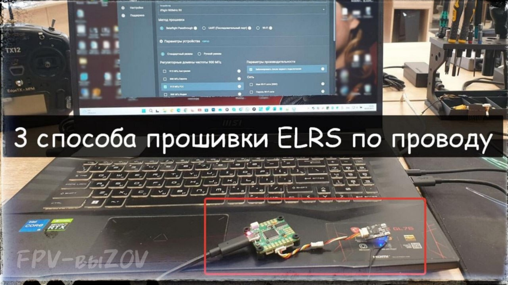

Read Firmware - программа для чтения и скачивания прошивки для ELRS приемников/передатчиков.
* готовый скрипт для
Это вложение из поста t.me/platforma_fpv/35/1169

Как прошить приемник ERLS, если не работает кнопка BOOT.
ℹ️ Метод прошивки: через полетный контроллер "Betaflight Passthrough".
Вам понадобится:
- приемник ELRS, который нужно прошить;
- полетный контроллер;
- USB-кабель (для подключения полетного контроллера к компьютеру);
- набор для пайки (если приемник не подключается через шлейф);
-
;
- интернет.
Порядок прошивки
.
- подключаем приемник к полетному контроллеру (пайкой, через коннектор);
- полетный контроллер подключаем USB-кабелем к компьютеру;
- запускаем
;
- в "Метод прошивки" выбираем "Betaflight Passthrough";
- запускаем прошивку.
📎 Скачать инструкцию
⚠️ Таким методом приемник прошивается на официальную прошивку.
Сеть Wi-Fi: ExpressLRS RX,
Пароль: expresslrs
Дальше
уже можно прошить на свою прошивку.
#ПРОШИВКА
#FPV
#техник_fpv
#управление
Это вложение из поста t.me/platforma_fpv/2/1237

Как прошить ELRS по проводу.
3 способа.
➡️ Способ 1
UART (Последовательный порт).
Необходимо:
+ TTLадаптер.
- Необходим интернет, прошивается на официальную версию.
сеть Wi-Fi: ExpressLRS RX,
пароль: expresslrs
- Дальше
уже можно прошить на свою прошивку.
Способ 2
Betaflight Passthrough.
Необходио:
+ полетный контроллер.
Можно использовать,
.
- Необходим интернет, прошивается на официальную версию.
сеть Wi-Fi: ExpressLRS RX,
пароль: expresslrs
- Дальше
уже можно прошить на свою прошивку.
➡️ Способ 3
(облегченная версия Esptool)
Необходимо: скачать на Windows программу
+ TTLадаптер.
- Интернет не нужен, сразу можно прошивать на свою прошивку (например на модифицированную
Не умею отображать вложенные ссылки на топики
(для способа 1 и 2)
📎
- программа прошивки ELRS (для способа 3)
#ПРОШИВКА
#FPV
#техник_fpv
#управление
Это вложение из поста t.me/platforma_fpv/2/1238
Как подключиться к приемнику на MILERLS по Wi-Fi
К приемнику на MILERLS подключиться по Wi-Fi можно двумя способами:
1. Получить пароль, скачав прошивку.
Получать пароль необходимо в том случае, если нужно посмотреть настройки вражеского приемника
(например частоты). В ином случае можно сразу прошивать на свою прошивку.
2. Сбросить настройки до значений «по-умолчанию».
Сброс настроек нужен для того, чтобы можно было прошить приемник на свою прошивку (например
KapibaraLRS), но нет TTL-адаптера (для прошивки по проводу).
Как получить пароль из прошивки.
Понадобится дополнительное оборудование:
- TTL-адаптер, он нужен для того, чтобы подключить приемник к компьютеру с помощью USB-провода.
Приемник нужно припаять к TTL-адаптеру (аналогично как к полетному контролеру):
- RX приемника – TX TTL,
- TX приемника – RX TTL,
- 5V приемника – 5V TTL,
- GND приемника – GND TTL.
Понадобиться ПО, с помощью которого можно будет скачать прошивку - это программа read firmware.
Порядок скачивания прошивки с помощью read firmware.
1. Скачать архив с программой на компьютер и распаковать в удобное место.
2. Зажать кнопку BOOT на приемнике (где есть кнопка) или замкнуть контакты BOOT (где нет кнопки).
3. Подключить TTL-адаптер к компьютеру (приемник припаян, BOOT зажат).
4. Открыть папку с read firmware (куда ранее распаковали).
5. Запустить файл READ.cmd.
6. Если подключение было выполнено правильно, программа подключится к приемнику и сохранит
прошивку в файл my001.bin в папку с программой.
Мы получили файл прошивки, чтобы найти в нем пароль Wi-Fi:
1. Открыть файл с помощью блокнота.
2. Задать поиск по фразе: encryption_key.
3. Рядом будет указан пароль.
Как сбросить настройки.
Для сброса настроек приемника нужно.
1. Подать питание на приемник (через полетник, TTL).
2. Как приемник запустится (начнет мигать светодиод) – зажать кнопку BOOT (где есть) или замкнуть
контакты BOOT (где кнопки нет) не менее чем на 20 секунд.
3. После перезагрузить приемник.
4. Название сети сбросится на ExpressRLS RX, и стандартный пароль expressrls.
К приемнику на MILERLS подключиться по Wi-Fi можно двумя способами:
1. Получить пароль, скачав прошивку.
Получать пароль необходимо в том случае, если нужно посмотреть настройки вражеского приемника
(например частоты). В ином случае можно сразу прошивать на свою прошивку.
2. Сбросить настройки до значений «по-умолчанию».
Сброс настроек нужен для того, чтобы можно было прошить приемник на свою прошивку (например
KapibaraLRS), но нет TTL-адаптера (для прошивки по проводу).
Как получить пароль из прошивки.
Понадобится дополнительное оборудование:
- TTL-адаптер, он нужен для того, чтобы подключить приемник к компьютеру с помощью USB-провода.
Приемник нужно припаять к TTL-адаптеру (аналогично как к полетному контролеру):
- RX приемника – TX TTL,
- TX приемника – RX TTL,
- 5V приемника – 5V TTL,
- GND приемника – GND TTL.
Понадобиться ПО, с помощью которого можно будет скачать прошивку - это программа read firmware.
Порядок скачивания прошивки с помощью read firmware.
1. Скачать архив с программой на компьютер и распаковать в удобное место.
2. Зажать кнопку BOOT на приемнике (где есть кнопка) или замкнуть контакты BOOT (где нет кнопки).
3. Подключить TTL-адаптер к компьютеру (приемник припаян, BOOT зажат).
4. Открыть папку с read firmware (куда ранее распаковали).
5. Запустить файл READ.cmd.
6. Если подключение было выполнено правильно, программа подключится к приемнику и сохранит
прошивку в файл my001.bin в папку с программой.
Мы получили файл прошивки, чтобы найти в нем пароль Wi-Fi:
1. Открыть файл с помощью блокнота.
2. Задать поиск по фразе: encryption_key.
3. Рядом будет указан пароль.
Как сбросить настройки.
Для сброса настроек приемника нужно.
1. Подать питание на приемник (через полетник, TTL).
2. Как приемник запустится (начнет мигать светодиод) – зажать кнопку BOOT (где есть) или замкнуть
контакты BOOT (где кнопки нет) не менее чем на 20 секунд.
3. После перезагрузить приемник.
4. Название сети сбросится на ExpressRLS RX, и стандартный пароль expressrls.
Это вложение из поста t.me/platforma_fpv/35/1170
Read Firmware - программа для чтения и скачивания прошивки для ELRS приемников/передатчиков.
* готовый скрипт для
Это вложение из поста t.me/platforma_fpv/35/1169

Как подключиться по WI-Fi к приемнику на MILELRS
.
ℹ️ MILELRS - прошивка оппонентов, для управления FPV.
Не имеет стандартного пароля: каждая шифрованная пара (приемник-передатчик) имеет свой уникальный пароль.
К приемнику на MILERLS подключиться по Wi-Fi можно двумя способами
1. Получить пароль, скачав прошивку.
Понадобиться TTL адаптер и программа "
".
Получать пароль необходимо в том случае, если нужно посмотреть настройки приемника (например частоты). В ином случае можно сразу прошивать на свою прошивку (п.2).
2. Сбросить настройки до значений «по-умолчанию».
Сброс настроек нужен для того, чтобы можно было прошить приемник на свою прошивку (например KapibaraLRS).
- подать питание на приемник (через полетник, TTL);
- как приемник запустится (начнет мигать светодиод) – зажать кнопку BOOT (где есть) или замкнуть контакты BOOT (где кнопки нет) не менее чем на 20 секунд;
- после перезагрузить приемник;
- название сети сбросится на ExpressRLS RX, и стандартный пароль expressrls.
3. Если на приемнике не работает кнопка BOOT.
Попробуйте аккуратно удалить кнопку с платы и замкнуть контакты вручную (с помощью проволоки или пинцета), далее см. п1.
Если не помогло, то прошить с помощью полетного контроллера - подробнее в инструкции "
4. Если у Вас нет задачи "скачать прошивку"
,
а нужно только рабочий приемник, то переходите в инструкцию "
#ПРОШИВКА
#прошивка_для_FPV
#FPV
#техник_fpv
#управление
Веб-страница создана автоматически на основе поста пользователя ПЛАТФОРМА_FPV